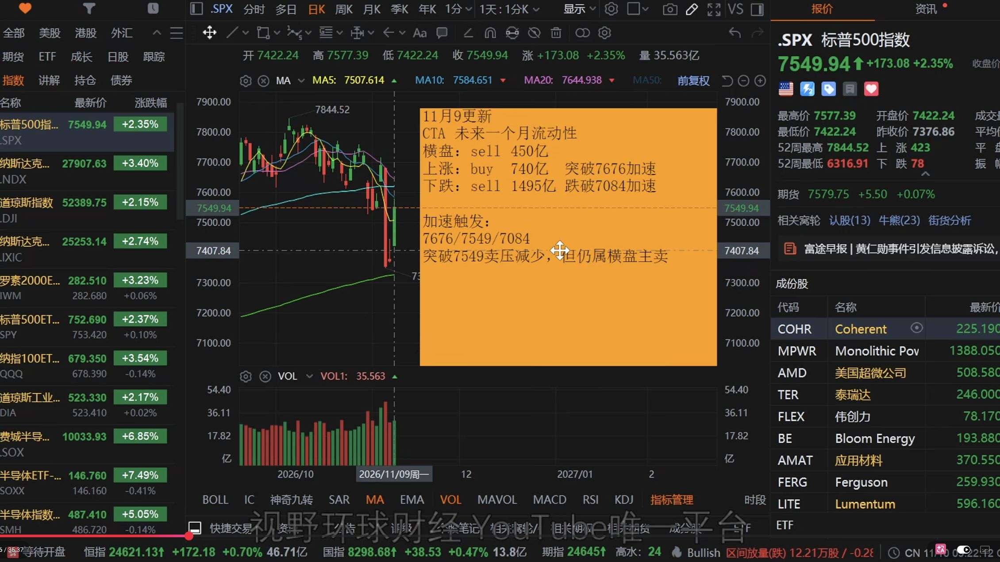
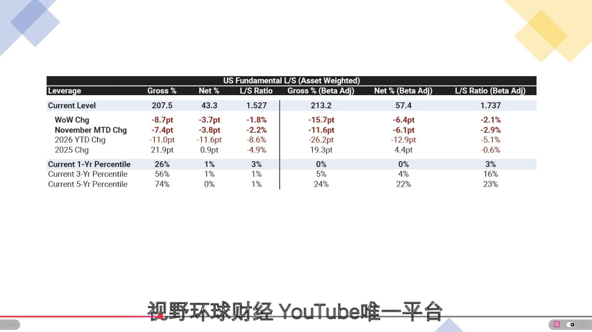
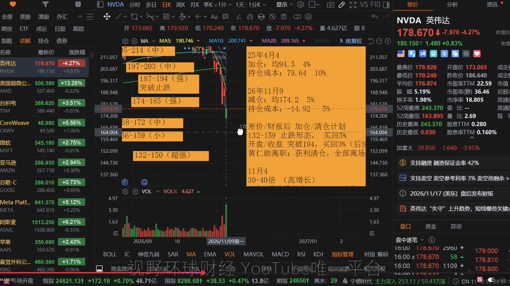
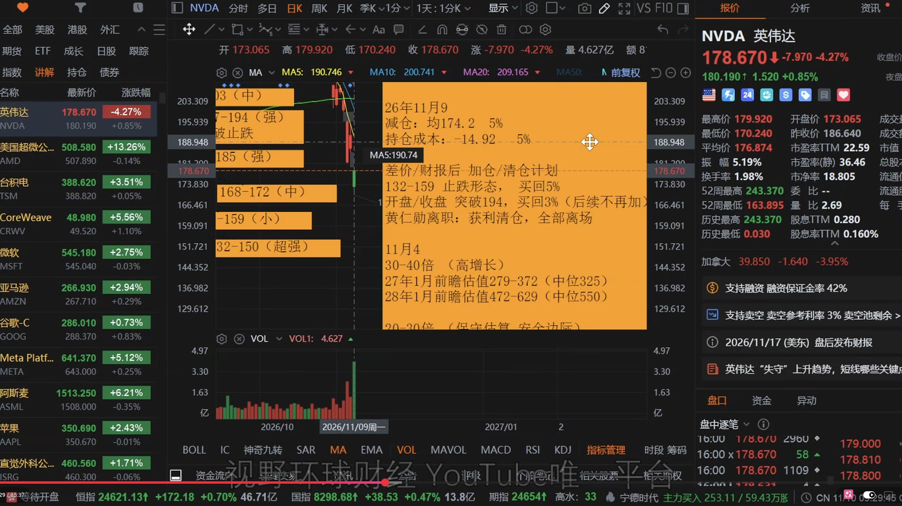
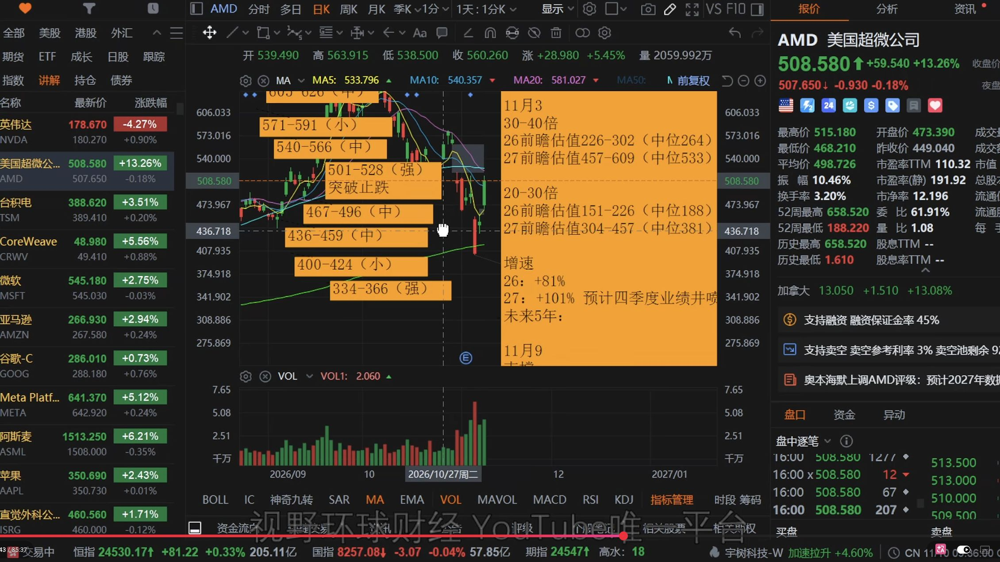
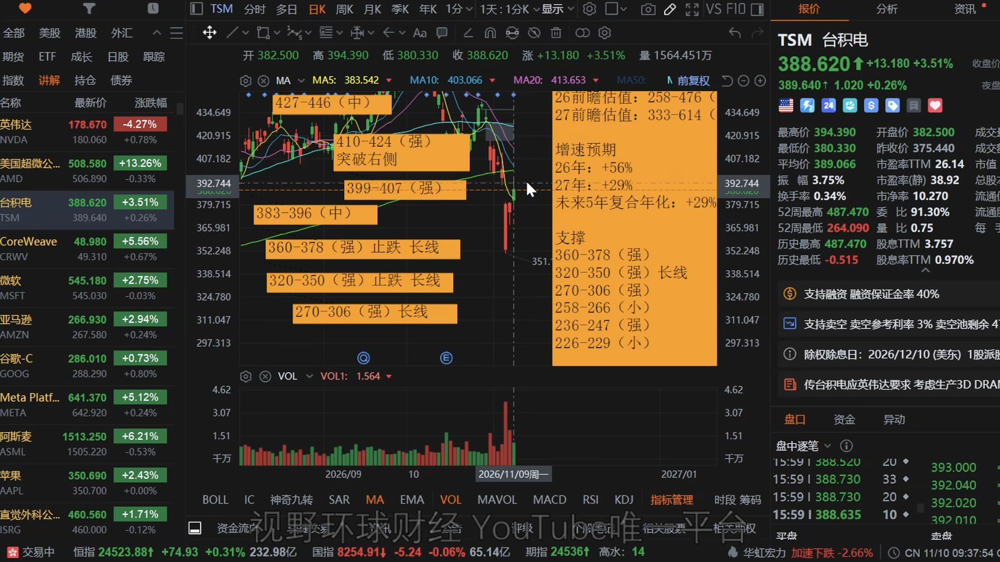
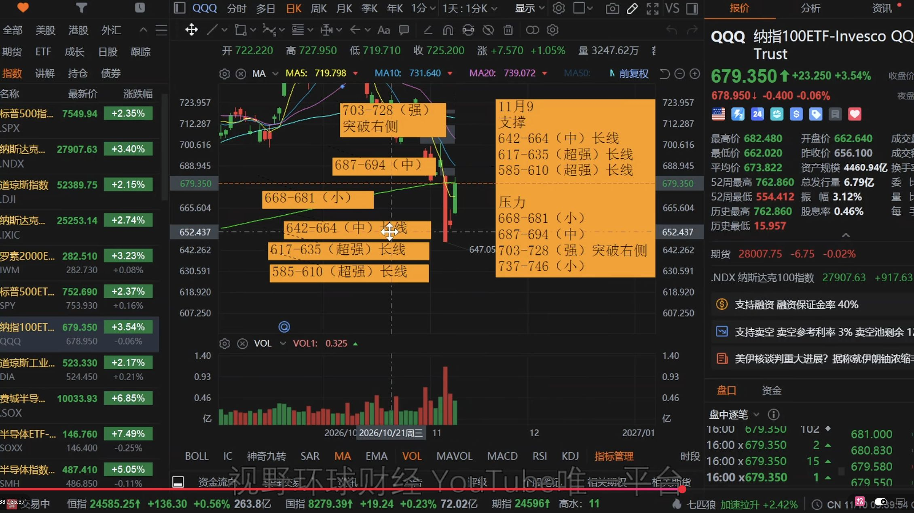
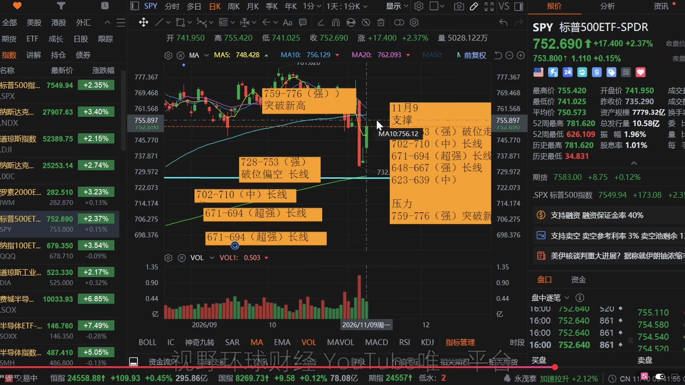
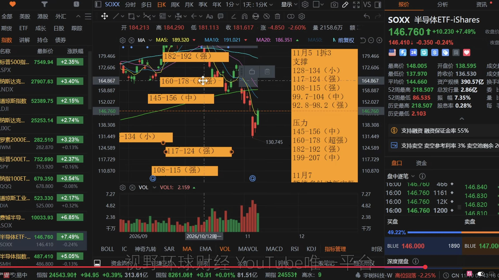
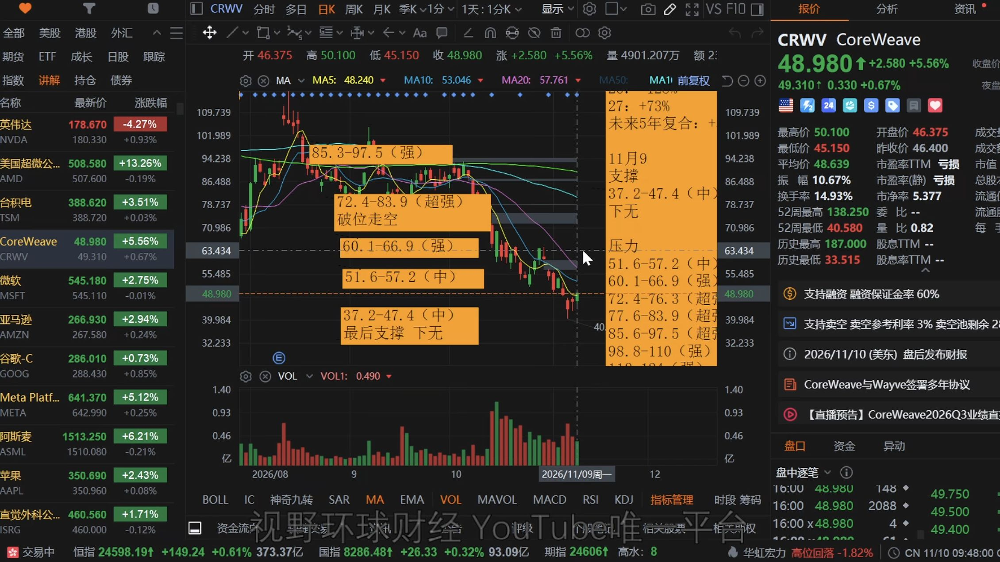

美股 上蹿下跳比猴还快！止跌了没？机构看法！我的仓位变动，CTA更新！ NVDA、AMD、TSM、SPY、QQQ！明天CRWV财报测试信心！本期重点13 组 · 33 条大盘反弹与信用利差3机构分歧与标普前瞻估值3CTA 的三条触发线3对冲基金降杠杆与企业回购3英伟达减仓与回补计划5半导体资本开支的观察窗口2AMD 大涨后的压力位2台积电等待二次回测2QQQ 在区间中段2SPY 的上下沿2SOXX 拆股点位和成分分化2潜在大型 IPO 的资金检验1CoreWeave 财报与信用风险3大盘反弹与信用利差费城半导体指数30只成分股中有29只上涨，英伟达是唯一收跌的一只。3 条反弹宽度费城半导体指数30只成分股中有29只上涨，英伟达是唯一收跌的一只。▶回听00:12—00:44对应正文 ↗信用利差超大规模数据中心运营商收窄得更快，接近一个月低位。▶回听01:52—02:31对应正文 ↗高波动阶段标普500二季度上涨14.87%，三季度相对横盘，四季度最近两周波动明显加剧。▶回听02:35—04:30对应正文 ↗机构分歧与标普前瞻估值动量交易的拥挤度从第100百分位降至第76百分位3 条拥挤度降温动量交易的拥挤度从第100百分位降至第76百分位▶回听04:34—05:16对应正文 ↗标普估值口径7000–8500点区间，是基于二季度数据、在2026年交易2027年前瞻盈利的测算▶回听05:17—05:59对应正文 ↗花旗与高盛本周CTA潜在卖盘可达250亿美元或更多。▶回听06:03—06:38对应正文 ↗CTA 的三条触发线横盘卖出450亿美元，上行情景列买入740亿美元，下行情景列卖出1495亿美元3 条一周与一月横盘卖出450亿美元，上行情景列买入740亿美元，下行情景列卖出1495亿美元▶回听06:58—07:42对应正文 ↗7549 与 7676到7676之前仍有卖盘。突破7676才对应加速买入。▶回听07:42—08:35对应正文 ↗7084 下行阈值跌破7084则进入下行情景的加速卖出区间。▶回听07:52—08:35对应正文 ↗对冲基金降杠杆与企业回购净杠杆率下降3.7个百分点至43.3%，处于五年样本第0百分位。3 条杠杆急降净杠杆率下降3.7个百分点至43.3%，处于五年样本第0百分位。▶回听09:50—10:52对应正文 ↗空头回补回补完成后买盘就可能消失，主观多头是否持续进场还要等数据。▶回听10:57—11:58对应正文 ↗回购窗口超过一半的标普成分股已结束回购静默期▶回听11:59—12:27对应正文 ↗英伟达减仓与回补计划我以174.2美元均价减掉约5个百分点，原来10%的仓位减半。5 条减仓纪律我以174.2美元均价减掉约5个百分点，原来10%的仓位减半。▶回听12:31—14:08对应正文 ↗下探回补若进一步下探到132–150美元并出现止跌形态，我计划买回5个百分点。▶回听14:28—15:44对应正文 ↗向上追随开盘或收盘确认突破194美元，我只买回3个百分点，后续不再加仓。▶回听15:43—16:17对应正文 ↗管理层条件若黄仁勋离职，我会清掉剩余持仓。▶回听18:26—19:35对应正文 ↗财报期权期权隐含波动约为178美元上下各20美元。▶回听22:04—23:01对应正文 ↗半导体资本开支的观察窗口2027年1月底至2月初，这段时间要看公司怎么披露2027年资本开支。2 条披露窗口2027年1月底至2月初，这段时间要看公司怎么披露2027年资本开支。▶回听16:07—17:48对应正文 ↗高增长兑现后的安排我反而考虑分步降低已经获得较多利润的半导体仓位▶回听17:49—18:34对应正文 ↗AMD 大涨后的压力位AMD当天上涨约13%，收于508.58美元。2 条当日反弹AMD当天上涨约13%，收于508.58美元。▶回听19:57—21:13对应正文 ↗止跌确认技术上501–528美元是压力区，跨过528美元前先按反弹看▶回听21:10—22:05对应正文 ↗台积电等待二次回测突破424美元才符合我的右侧条件。2 条424 美元分界突破424美元才符合我的右侧条件。▶回听23:03—23:44对应正文 ↗反弹近 390因此我继续等二次回测。▶回听23:43—24:33对应正文 ↗QQQ 在区间中段离687–694美元中等压力不远。前一轮低点约647美元，落在642–664美元区域。2 条压力与回测离687–694美元中等压力不远。前一轮低点约647美元，落在642–664美元区域。▶回听25:07—26:20对应正文 ↗728 美元确认突破728美元才进入更大的上行区间。▶回听25:43—27:10对应正文 ↗SPY 的上下沿上方759–776美元是强压力区，下方728–753美元是支撑区。2 条强压力和支撑上方759–776美元是强压力区，下方728–753美元是支撑区。▶回听27:12—28:02对应正文 ↗区间里如何看波段行情反复折返，波段入场和退出容易错位。▶回听27:53—28:42对应正文 ↗SOXX 拆股点位和成分分化原先口头提到的179美元修正为178美元，图中对应160–178美元区间。2 条拆股后区间原先口头提到的179美元修正为178美元，图中对应160–178美元区间。▶回听28:45—29:35对应正文 ↗成分股合力强弱成分相互抵消时，ETF合力较难形成▶回听29:26—30:20对应正文 ↗潜在大型 IPO 的资金检验当时提到的发行价和募股数量仍未确定1 条发行时间仍待确认当时提到的发行价和募股数量仍未确定▶回听30:30—32:00对应正文 ↗CoreWeave 财报与信用风险CoreWeave的CDS利差约1200个基点。3 条1200 基点CoreWeave的CDS利差约1200个基点。▶回听31:59—33:21对应正文 ↗期权区间向下接近37.2–47.4美元的最后一档图示支撑下沿，向上接近51.6–57.2美元一带的压力。▶回听33:20—34:28对应正文 ↗财报信心测试若跌穿最后一档标注支撑，这张图没有列出更低的承接区间。▶回听33:52—35:00对应正文 ↗这期涉及哪些股票与内容？NVDA主讲低于174美元触发减仓，174.2美元均价减5个百分点。132–150美元止跌回补5个百分点，突破194美元回补3个百分点。AMD主讲当日涨约13%，501–528美元是压力区，突破528美元才看技术上行。TSM主讲反弹接近390美元，突破424美元才进入右侧。CRWV主讲CDS约1200基点，期权隐含49美元上下约9美元波动。QQQ主讲687–694美元中等压力，突破728美元才看更大上行。SPY主讲759–776美元强压力，728–753美元支撑。SOXX主讲一拆三后修正观察点至178美元，成分分化限制ETF合力。背景提及：MSFT、AMZN、GOOGL、META。市场指标：SPX、SOX。背景提及不代表对该股票展开分析。CHAPTER 01 · 回听 00:12大盘反弹与信用利差四大指数大涨，标普500有423只成分股上涨、78只下跌，工业、可选消费、科技和通信服务表现靠前。费城半导体指数30只成分股中有29只上涨，英伟达是唯一收跌的一只。数据中心信用违约互换（CDS）利差整体回落，超大规模数据中心运营商收窄得更快，接近一个月低位。大型科技股反弹与这部分信用风险定价回落同时发生。标普500二季度上涨14.87%，三季度相对横盘，四季度最近两周波动明显加剧。部分账户回吐上半年浮盈，对冲基金的表现也受到冲击。单日普涨还不足以判断这种高波动已经结束。CHAPTER 02 · 回听 04:30机构分歧与标普前瞻估值摩根大通观察到动量交易的拥挤度从第100百分位降至第76百分位，据此判断抛售可能接近尾声。加拿大皇家银行策略师也认为这轮调整可能进入最后阶段。摩根士丹利认为标普接近其下行目标区间，可能为年底反弹创造条件。我自己的7000–8500点区间，是基于二季度数据、在2026年交易2027年前瞻盈利的测算，三季度财报尚未披露完，区间还没有更新。花旗下调美国股票和全球科技股评级，判断风险上升。按节目引用的高盛模型，本周CTA潜在卖盘可达250亿美元或更多。CHAPTER 03 · 回听 06:38CTA 的三条触发线一周模型中，无论横盘、上涨或下跌，美国股市相关CTA都偏卖。一个月的图示分三种情景，横盘卖出450亿美元，上行情景列买入740亿美元，下行情景列卖出1495亿美元，实际方向仍取决于触发线。标普收于7549.94点。守在7549上方，卖压有望减轻，但到7676之前仍有卖盘。突破7676才对应加速买入。若回到7549下方，卖压可能逐步增加，跌破7084则进入下行情景的加速卖出区间。这里讨论的是CTA在美国股指期货上的资金变化，整个策略还会跨国债、黄金和其他市场配置。放大查看 ↗标普500与CTA一月资金情景及触发线原视频 07:56回听此处CHAPTER 04 · 回听 09:32对冲基金降杠杆与企业回购美国基本面多空对冲基金上周总杠杆率下降8.7个百分点，降至207.5%，是2020年3月以来最大单周降幅。净杠杆率下降3.7个百分点至43.3%，处于五年样本第0百分位。仓位统计有滞后，暂时看不出对冲基金是否在反弹日重新加仓。我倾向于认为此前行情里已有空头回补，但回补完成后买盘就可能消失，主观多头是否持续进场还要等数据。超过一半的标普成分股已结束回购静默期，企业在下跌中具备重新执行回购的条件。放大查看 ↗美国基本面多空对冲基金杠杆变化原表原视频 10:32回听此处CHAPTER 05 · 回听 12:29英伟达减仓与回补计划我的技术减仓线是开盘价或收盘价低于174美元。当天开盘约173美元，我以174.2美元均价减掉约5个百分点，原来10%的仓位减半。余仓约5%，按我的账户成本口径，已收回最初投入。168–172美元附近已有买盘。若进一步下探到132–150美元并出现止跌形态，我计划买回5个百分点。画面里的仓位计划曾写132–159美元，口述随即把上限修正为150美元。如果股价直接V形反转，开盘或收盘确认突破194美元，我只买回3个百分点，后续不再加仓。此前减仓会牺牲这部分价差，回补的目的是跟上已经确认的趋势。若黄仁勋离职，我会清掉剩余持仓。这个条件是我的个人持仓安排，节目中把它视为小概率情景。11月17日财报前，节目时点的期权隐含波动约为178美元上下各20美元。两侧都有定价，向下可能触及150多美元，向上也可能跨过194美元。离财报还有时间，临近时仍需重新观察。放大查看 ↗英伟达日线与支撑压力区间原视频 14:34回听此处放大查看 ↗英伟达减仓与财报后回补计划原图原视频 15:29回听此处CHAPTER 06 · 回听 16:07半导体资本开支的观察窗口2026年第四季度财报集中在2027年1月底至2月初，这段时间要看公司怎么披露2027年资本开支。新数据中心项目审批放缓主要影响后续项目，2028年的建设节奏及半导体增长预期可能因此调整，仍取决于各州最后如何执行。若2027年初的资本开支继续高增长、市场又快速冲高，我反而考虑分步降低已经获得较多利润的半导体仓位，再分散到其他板块。CHAPTER 07 · 回听 19:54AMD 大涨后的压力位AMD当天上涨约13%，收于508.58美元。一种可能的市场定价是，假如英伟达的产品或经营以后受到限制，AMD有承接部分需求的机会。这只是条件推演，录制时我没有确认国会已经介入。按较高增长倍数估值，跌到450美元附近有吸引力，但若数据中心建设周期拉长，盈利增速预期可能下修。技术上501–528美元是压力区，跨过528美元前先按反弹看，突破才具备技术上行条件。放大查看 ↗AMD日线、501–528美元压力区及估值情景原视频 21:43回听此处CHAPTER 08 · 回听 23:02台积电等待二次回测台积电此前触及我关注的价格，但没有给出止跌形态。图上410–424美元是上方压力，突破424美元才符合我的右侧条件。反弹把台积电带回接近390美元的旧区间，前期破位后的压力仍在。大盘上方关口也接近CTA由卖转买的触发线，因此我继续等二次回测。微软、亚马逊、Alphabet和Meta本期没有新增观点。放大查看 ↗台积电日线、旧区间与410–424美元压力原视频 23:38回听此处CHAPTER 09 · 回听 25:05QQQ 在区间中段QQQ回到约679美元，离687–694美元中等压力不远。前一轮低点约647美元，落在642–664美元区域。反弹从支撑边缘迅速走向压力，当前位置仍在区间中段。703–728美元是更高一档压力，突破728美元才进入更大的上行区间。两次V形折返没有给出充分形态，我更愿意等二次测试。放大查看 ↗QQQ日线、642–664美元支撑及两档压力原视频 25:38回听此处CHAPTER 10 · 回听 27:10SPY 的上下沿SPY反弹后仍卡在中间，上方759–776美元是强压力区，下方728–753美元是支撑区。上方压力和标普指数CTA触发带相呼应，但SPY以美元报价，标普的触发线以指数点计。行情反复折返，波段入场和退出容易错位。按长期配置指数的思路，可以在区间内分配仓位，避免集中到同一价位。想做波段，我更倾向等价格和形态给出清晰信号。放大查看 ↗SPY日线、728–753美元支撑和759–776美元压力原视频 27:39回听此处CHAPTER 11 · 回听 28:45SOXX 拆股点位和成分分化SOXX完成一拆三，原先口头提到的179美元修正为178美元，图中对应160–178美元区间。当时价格处于中间位置，仍看不出哪一方占优。即使当天大部分成分股同涨，后续各公司的资产负债表、信用成本和盈利变化会分化。强弱成分相互抵消时，ETF合力较难形成，我更愿意逐股看质量和强弱。放大查看 ↗SOXX拆股调整后的日线与点位区间原视频 28:59回听此处CHAPTER 12 · 回听 30:30潜在大型 IPO 的资金检验节目引用了关于Anthropic可能启动IPO路演的媒体消息。当时提到的发行价和募股数量仍未确定，若本周更新文件并完成定价，才可能进入下一周的上市窗口。在流动性偏紧时，大型AI发行本身也是一场资金承接测试。CHAPTER 13 · 回听 31:58CoreWeave 财报与信用风险节目时点，CoreWeave的CDS利差约1200个基点。我用大型科技常见的50–100个基点作对照，100–200表示风险升高，超过200是节目里用来说明高风险信用定价的参照。财报后的买盘和卖盘将检验市场对数据中心融资的信心。当时期权对当周五的隐含波动约为49美元上下各9美元，约等于两成，节目以约68%的模型概率描述该范围。向下接近37.2–47.4美元的最后一档图示支撑下沿，向上接近51.6–57.2美元一带的压力。即使涨到上沿，也先看能否企稳。这份财报是美东11月9日录制时展望的次日事件。若财报后买盘能承接，市场对数据中心的信心有机会修复。若跌穿最后一档标注支撑，这张图没有列出更低的承接区间。放大查看 ↗CoreWeave财报前日线、末档支撑与反弹压力原视频 33:43回听此处SOURCE MATERIAL完整转录与回听原视频：美股 上蹿下跳比猴还快！止跌了没？机构看法！我的仓位变动，CTA更新！ NVDA、AMD、TSM、SPY、QQQ！明天CRWV财报测试信心！机器原稿可能含同音字与数字单位错误，保留用于对照。播放00:0035:371×1.25×1.5×2×静音展开完整转录下载 TXT ↗下载 SRT ↗查找转录内容00:00大家好,欢迎回到视野环球财经,我是Rino。现在是美东时间,二六年十一月九号,周一晚上的七点五十五分。00:09哎呀,这个市场可真热闹啊。今天的四大指数是大涨啊,全市场的狂欢。标普呢,有四百二十三只成分股上涨啊,只有七十八只下跌。其中像什么工业、可选、消费品、科技还有通行服务呢,都是表现非常的好。00:28那么今天的费城半导机指数呢,表现也相当的不错啊,是万绿从中一点红啊,三十只成分股呢,二十九只上涨,只有英伟达一个独立下跌。00:42今天的节目啊,咱们呢,主要是想讲一下啊,现在这个混乱的行情,呃,在背后的一些大盘还有资金的情况啊,包括像什么对冲基金最新的一些仓位,00:57以及还有CTA最新的一些点位和现在的情况啊,因为市场不是在剧烈的摇摆嘛。01:06另外呢,还有就是机构对当前行情的看法啊,到底是止跌了没有呢?01:11另外,我的持仓啊,英伟达的仓位变动啊,包括后续的计划啊,还有像什么台积电AMD的位置。01:20另外大盘和废半现在的情况到底如何?01:24还有呢,就是有几个消息给大家说一下啊,就是包括像明天Covid的财报,它是中期选举结束之后呢,最新的对AI数据中心的一个市场检验。01:36我们看一下它的一个波动情况啊,包括很期待明天它的一个市场反应到底是把它大幅的买回来,还是呢,这个彻底的给扔掉。01:47另外呢,还有下周潜在的大型IPO的上市,等会给大家稍微的提一下哈。01:51今天的东西非常的杂乱啊,我尽量呢,还是慢慢的给大家来讲。01:57首先呢,我说一下今天整体市场的大致状况。02:03今天的数据中心方面啊,就是关于整个的数据中心的这个CDS的价差是小幅收窄,就是往下下跌,回落了差不多500个基点。02:16那么这里边呢,超大规模数据中心运营商的CDS回落得更快。02:23就是我们说的斯大科技他们啊,已经回落到了接近一个月以来的低点。02:30所以斯大科技今天涨得都非常的好啊,说实话呢,他们还是相当的稳啊。02:37那么最近几个星期的行情呢,我相信大家也看到了啊,真的是剧烈的波动。02:44今天呢,看到了一句话啊,确实很好地总结了今年迄今为止的投资者的心态啊。02:51包括机构也一样啊,如果我们打开今年的这个季线,你会发现,今年实际上呢,在整个的前面的这个季度啊,就是刚开始的前面的两个季度吧,上半年啊,包括特别像第二季度不是大涨吗?03:09整个标普涨了14.87%,感觉呢,整个二季度都像是人人能够赚到钱的市场。03:16是不是有那么一点点2021年的味道啊?03:20赚钱变得非常的容易啊,事后来看呢,这个或许是太容易了。03:26第三季度和第四季度到目前为止啊,情况截然不同。03:31整个的三季度呢,市场其实呢,是相对是比较横的。03:36那么,进入到四季度之后呢,特别是最近的两个星期,这个市场呢,就有一点不太对劲了。03:43市场赚钱变得非常的难,每个人呢,都在拼命。拼命干嘛呢?03:48想保持账户的稳定,它都不太容易。03:52所以,其实截止到目前为止啊,今年大部分的人都是损失了上半年赚到的大部分的福营。04:02包括对冲基金也一样啊,不是说个人投资者这两个星期或者一个季度表现比较差。04:08对冲基金,我们在上个星期给大家展示过他们的一些,04:12在今年的业绩也是比较的惨淡。04:15所以呢,这个市场啊,到现在为止,到目前为止,这种高波动的情况,04:20这种比较混乱的情况,到底有没有结束呢?04:25这种市场像被猴给负了身的上窜下跳,会什么时候结束呢?04:31会不会更好一些呢?04:33今天呢,我也给大家搜集了一些机构啊,不同的机构对于市场的看法啊,04:40认为现在到底是什么情况。04:44咱们一个个看啊,摩根纳通认为呢,04:49抛售已经接近尾声啊,他们是通过动量拥挤程度,04:54已经从100的百分位回落到76百分位,04:58简单讲了,就是一些比较拥挤的股票,05:00经过一轮下跌之后呢,大家有点被吓到了啊,吓到之后呢,就没那么拥挤了啊,所以呢,05:05抛售呢,大家也差不多,抛的差不多了,然后呢,仓位呢,也差不多了啊,05:11所以,他认为呢,接下来啊,已经是接近尾声了啊,但他没有说这个完全结束啊,05:18好,我们看一下摩根斯丹利,05:20他们也认为调整即将结束啊,05:24他们认为呢,标普500指数正在接近下行目标的区间,05:28可能会在年底前引发一波上涨行情啊,05:32这个呢,是基于标普的点位的一个测算,05:35因为标普我们说过啊,是在7000到8500点,05:38就是在26年截止到二季度之后啊,05:41二季度之后啊,因为现在三季度财报还在披露,05:44没有结束啊,并没有,我并没有进行更新,05:46二季度之后的标普的在26年的交易的27年的前瞻,05:51是在7000到8500点,05:53所以呢,当大盘越来越接近7000的时候,05:55那么,咱们认为调整就即将结束啊,05:59好,我们看另外一个,06:02加拿大皇家银行的策略师呢,06:04也为这波反弹提供了助力啊,06:06他们认为这一次的调整可能已经进入最后阶段,06:09对吧,这三家都是比较看好,06:12好,我们再看一下不看好的,06:16花旗刚刚下调了美国股票和全球科技股的评级,06:22他认为呢,风险在升高,06:26高盛的自身的模型显示,06:29本周的CTA的潜在的卖盘可能要达到250亿美元或更多,06:37高盛呢,06:38更新了全新的CTA,06:40因为这个数据呢,06:41相对又有一些跟我们上个星期讲的有一些变化,06:45我给大家还是拿出来说一下,06:47有一些重要的点位的更新,06:51好,关于CTA的部分,06:56截止到今天为止,06:57我给大家解释一下,06:58那么CTA呢,06:59在未来一个月的流动性啊,07:01我们首先说一周的啊,07:03一周其实也有就是短期的,07:05就是本周之内,07:06本周呢,07:06CTA是全部都是卖盘啊,07:08所有的,07:09不管是横盘上涨下跌,07:10全部都是卖,07:11但是呢,07:12我们主要是看一个长期啊,07:14中长期的会更加的有指导性一些,07:17那么CTA在未来一个月的流动性,07:20横盘会卖450亿,07:23这里指的是美国市场啊,07:24然后上涨会卖740亿,07:28在什么地方它会加速的买入呢,07:31在突破7676会加速买入,07:36那么下跌的过程中呢,07:38会卖掉1495亿,07:41非常大的一个卖压,07:42但是要突破啊,07:44跌破7084才会去加速,07:48那么我们可以看到,07:49下方的加速出发呢,07:50有一个7549,07:51其实就是今天收盘的位置,07:53那这个位置怎么去看待呢,07:55这个位置的收盘位置的看法就是,07:58介于7549到7676之间呢,08:02他们在上涨的过程中呢,08:03其实他们的卖压会减少,08:05在没有突破7676之前,08:08卖压还会有,08:09但不会那么大了,08:11但如果又回到了7549的下方,08:13他们才会又开始逐渐的加速去抛,08:16一直抛到最大的位置1495,08:19把它要甩1000多亿出去,08:22那么反正,08:23如果7549到7676,08:24他们一直小卖小卖小卖,08:26突破了7676,08:27那么他们会加大买入的,08:29直接就反转,08:31开始进行买盘,08:32简单理解呢,08:33他们确实是一个追涨杀跌的操作,08:36CTA就是这样啊,08:37它本来就是追涨杀跌的策略,08:39但是呢,08:39它不是一个独立市场,08:41它是一个跨市场啊,08:43所以你不要认为,08:44它是这个追涨杀跌,08:45老是亏钱,08:46它怎么赚钱,08:47跨市场啊,08:48它不是说只有股市,08:50只有期货,08:51不是只有这一头啊,08:52它是跨市场在联动的,08:54所以如果你想知道它怎么赚钱,08:55你需要了解它在整个跨市场的不同的领域,08:58不同的商品,08:59包括黄金,09:00包括国债市场,09:01它是怎么去操作的,09:03你才能理解它的这个盈利逻辑啊,09:05所以我们这里只说股市它目前的一个情况,09:09特别是股市主要指的是期货层面啊,09:12好,09:13这个是标普的大致的这个CTA的这个变化情况,09:17相信大家也看到了,09:18CTA在本周呢,09:20提供不了太多的助力,09:21只要维持在7549的上方,09:23它们的卖额会比较小,09:25一旦突破7676,09:26它们才会追涨加速,09:28剩下的呢,09:28如果又回到7549下方了,09:30那它们的抛压呢,09:31又开始慢慢的又增加起来,09:33这么理解就可以了啊,09:35好,09:36这个是CTA的大致情况,09:39接下来呢,09:40给大家讲完这个,09:42再说一下上个星期的对冲基金的仓位的情况,09:50我们这里还是只统计美国的09:52对冲基金在美国的仓位啊,09:56总体来讲呢,09:57这个在上个星期对冲基金的减仓,10:00就是驱杠杆驱得非常快,10:03美国基本面的多空的对冲基金,10:05在一周之内将总杠杆率降低了8.7个百分点,10:11这是一个车杠杆的行为,10:13这个是自2020年3月的疫情爆发以来的最大的单周降幅,10:19降的幅度非常快,10:21同时多空的净杠杆率也下降了3.7个百分点,10:27那么这个是解放日以来单周的最大降幅,10:31目前降到了43.3%,10:34那么这个在五年期里边处于第零百分位,10:39我们说越接近零代表呢,10:41这个仓位越低,10:43越接近一百代表越高,10:46这就代表呢,10:47最终基金在过去五年的持仓里边,10:49他们的净多头的持仓从未如此之低,10:53五年最低,10:55好,10:56至于今天我们看到啊,10:57市场整体在大涨,10:59他们有没有把仓位加回去呢,11:01这个看不到啊,11:02因为到下个星期才会有一些滞后的统计,11:06因为不可能,11:07最终基金把仓位晾给你,11:09天天给你看嘛,11:10这也不符合这个市场的这个一些监管要求啊,11:14所以呢,11:15滞后统计,11:15今天加没加,11:16确实不知道啊,11:18但是呢,11:18我们知道之前由于空头的杠杆是比较大的,11:21在周四包括周五的这个行情中,11:24肯定是有一些空头回补行为的啊,11:27这肯定是有的啊,11:29一定是会发生的,11:29因为我们说空头之前的杠杆也比较高吧,11:32对吧,11:32我们说这是一个潜在的有可能会嘎空的一个契机,11:37那现在呢,11:38应该是有一些,11:39但是嘎空和基本面的主观多头买入,11:42它是有本质区别,11:44因为嘎空这个东西,11:45它是可以随时停止的,11:46说停就停,11:48对吧,11:48它差不多降完了,11:49它不嘎了,11:49它不回补了,11:50那就结束了呗,11:51因为你涨速不可能每天都涨量,11:53三个点三四个点吧,11:54对吧,11:55好,11:56所以呢,11:56这个是目前来讲整个的最终基金的情况,12:00那么从买盘层面,12:02有没有一些助力呢,12:03就是我们之前谈到的企业回购啊,12:07标不成分股呢,12:08目前有超过一半的股票的禁售期已经,12:12这个禁购期已经结束了,12:15所以回购,12:17它们是已经回归了,12:19下接过程中呢,12:20它们当然想买就可以,12:21随时就可以去执行,12:24好,12:25这个呢,12:26是大盘的一些资金流动层面,12:28接下来给大家讲一讲个股的情况,12:34首先讲我的这个第二大持仓英伟达的状况啊,12:39给大家说一下,12:41英伟达呢,12:42今天是开盘开到了173块啊,12:45之前给大家讲过我的这个技术性的这个减仓计划,12:50跌破开盘或者收盘价以174为标准啊,12:55只要低于这个价位,12:56那么我会技术性的做一个减仓,13:00那么这个减仓目的是什么呢,13:02目的是为了规避技术性的下行风险,13:06因为下方比较空虚,13:08那么呢,13:09我希望能在这里边获得一个价差,13:12就是跌下去之后,13:14我把它给买回来,13:16当然那这么做肯定也是有风险的咯,13:18就是它没跌下去,13:20它直接V上去了,13:21那代表着我这个减仓,13:24那肯定就是错误的啊,13:25因为你减到了一个非常低的位置啊,13:28这是我们要付出的风险,13:29但是纪律就是纪律啊,13:31就跟我之前啊,13:33该清仓的经仓,13:34该减仓的减仓,13:35破位的就是投的不回直接走,13:37对吧,13:38达到了自己的这个目标位置的,13:40特别是止损位置的,13:41直接一回头啊,13:43不要就不要去留念啊,13:44这是我的一个呃,13:46持仓纪律啊,13:47好,13:48所以呢,13:48今天啊,13:49我是做了一个减仓啊,13:50均价在174.2,13:52之前10%的一个持仓,13:53直接减掉一半啊,13:55这次我们给大家沟通过,13:56那么目前减完仓之后呢,13:57由于我之前的持仓成本是比较低的啊,14:00所以呢,14:00我是一个持续的一个复印状态啊,14:03目前呢,14:04是拿出了所有的英伟达的这个投入成本啊,14:07已经是全部利润在奔跑,14:09所以对我来讲呢,14:11他即便涨上去啊,14:12后面呢,14:13也只是我说利润的这个减少啊,14:15就是没有以前赚那么多啊,14:16仅此而已啊,14:17但这只股票,14:18他呢,14:19只要不跌成零啊,14:20我是没有风险的,14:21好吧,14:21这么去理解,14:23好,14:23那么后面的英伟达的股价怎么去看待,14:27首先啊,14:27对于加仓的位置啊,14:29我有几个考量,14:30跟大家说一下,14:32因为英伟达呢,14:33是17号的财报,14:35他呢,14:36在财报之前怎么跑呢,14:38现在呢,14:39不好说啊,14:39因为今天其实在170这个位置,14:42是有比较强烈的,14:44你看今天的盘面上啊,14:45整个买盘还是比较强的,14:47就是在这个地方啊,14:48168到172这一线,14:50买盘呢,14:51很强,14:52对吧,14:53它是确确实实有人在买啊,14:55好,14:55这是第一,14:56那么能不能跌到多深,14:59我只能说,15:00做一个预期最好的状况,15:02那么技术面呢,15:03如果能跌到150,15:05132到150这个位置,15:07那对我来讲,15:08这个价差做的就很舒服,15:10对吧,15:11那如果它不跌呢,15:13怎么办呢,15:13好,15:14我给你给大家列回来了啊,15:15在这里全部都写的很清楚,15:17第一种情况,15:18我加回来,15:19是132到150啊,15:21我这里又写错了,15:21150的位置啊,15:23只跌形态,15:24我会买回5%,15:26啊,15:26把这仓位,15:28减掉的给买回来,15:29因为做个价差嘛,15:30我基本面并没有看空它啊,15:32所以呢,15:32只是为了做一个价差,15:33继续降低乘仓成本,15:35获得持仓的优势,15:36好,15:37第二个呢,15:38就是它根本就不跌,15:40或者财报之后,15:40它直接突破暴涨,15:42对吧,15:42一下就突破了194块,15:45那突破就只跌了,15:47它这一轮就突然间就V回去了,15:49那我这个减仓就很失败,15:51对吧,15:51那这种情况呢,15:52我会同样买回去,15:55相当于我是低卖高买了,15:57那持仓成本会增加,15:59做的就做的就比较差嘛,16:01那就代表着这个结果就不好嘛,16:03对吧,16:03但是趋势跟上,16:06趋势跟上,16:07但这一波我不会再买回5%了,16:10如果突破194之后,16:12我只会买回3%,16:13且后续不再加仓,16:16因为这个时间点,16:17我们在讲过啊,16:182026年的四季度财报,16:20也就是自然力的27年的一季度的,16:23后面那个半个月开始的财报季,16:26四季度财报季,16:28会是一个对于2027年的资本支出,16:31一个高风险的时间段,16:34那么再加上现在呢,16:35对于数据中心新的项目的审批,16:39现在呢,16:39是暂缓的一个过程,16:41没有禁止,16:41没有完全禁止啊,16:42没有说以后就不做了啊,16:44这个没有任何一个,16:45说以后不允许建数据中心,16:47只是说新项目审批,16:50那么新项目的审批,16:51大多数都会发生在什么呢,16:53其实是2028年的项目,16:55也就是市场现在呢,16:57对于2028年潜在的情况,16:59可能会有一个剧烈的调整,17:01这个主要是看各州的禁令的最终的执行情况,17:04那个我们现在没有办法先去讲,17:07但是呢,17:08从时间上看,17:092027年对于数据中心在2028年,17:13就是2027年自然力结束之后的,17:1528年的自然力这一年,17:18市场对于半导体的预期,17:20可能会发生较大的变化,17:21可能增速上会有较大的变化,17:24好,17:25所以总的结论来讲,17:27就是从2027年的一季度到一月份底到二月份初的这一段时间,17:33是一个重要的2027年资本支出的一个披露的窗口期,17:39那这个时间呢,17:40是一个高风险时期,17:41所以也符合我对于整个的半导体的这一轮的高增长的一个持仓,17:48那么开始进入一个逐渐的保守,17:52就是如果它真的涨得很快啊,17:54我们说突然间碰碰碰,17:55非常好,17:562027年一开头资本支出继续大增,17:59或者维持高增长不变,18:00市场啪一下冲上去了,18:02另一种情况呢,18:04那我提前告诉大家,18:05我反而会逐步的把一些高获利的,18:08半导体相关的仓位给减下来,18:12对,18:13减先减下来,18:14然后逐步的可能后面要分配到其他的一些分散的板块去,18:19今天跟大家讲一声啊,18:21这是我目前的一个大致计划,18:23所以如果它这一波直接微回去了,18:25那我只加3%了,18:26后面我不会加太多,18:27那么如果是直接财报之后一口气掉下来了,18:32掉到了这个区域,18:33目前呢,18:34因为它这个整体状况是一个低估状况嘛,18:36不管你有多少倍去估啊,18:3820到30倍,18:39即便EPS逐步下调一些,18:41那么我这个地方也会买回来,18:44但有一种情况,18:45我这里写的很清楚,18:47如果黄仁勋离职了,18:50那英伟达这些股票我不再持仓,18:54我会全部清仓,18:55我不管它当时是什么价格,18:57如果它因为离职的消息突然间掉了10个点,19:00对吧,19:01或者20个点怎么样的,19:03我会直接清仓全部离场,19:05我不再持有,19:06好吧,19:06这是我的一个大致的情况,19:08跟大家提前讲清楚啊,19:11好,19:11呃,19:12当然这种情况发生的概率有多大呢,19:14那从董事会管理层的角度来讲,19:16我相信是不希望它离开的,19:18对吧,19:19不希望它离开的,19:20那这是离开的是一个最坏的情况嘛,19:22那毕竟带了这么多年了,19:24它的这个对英伟达的业绩的贡献,19:26大家有目共睹,19:27如果真的是离开,19:29那能不能找到一个,19:31像他一样的,19:32这么在英伟达这个工作岗位上,19:35CEO的岗位上,19:36能做这么好的业绩的,19:38我不清楚能不能找得到啊,19:40或许英伟达董事会能找到,19:42但是那个不在我的考量范围之内,19:44好吧,19:45所以跟大家讲清楚,19:46这是一个小概率事件,19:47但是呢,19:48一旦发生,19:49那我也要做出应对和安排,19:53好,19:53那这个就讲完了啊,19:55接下来呢,19:56我们再来看一下其他的一些台积电吧,20:00深圳说一下MD,20:02MD的情况是这样啊,20:06MD呢,20:06是英伟达的这个事情,20:09黄文勋的事情呢,20:10给英伟达带来了打击,20:12但是给MD来讲,20:15其实从某种程度上,20:17我不知道大家认不认为,20:18是某一种利好,20:20对吧,20:20因为一旦国会这边如果介入了调查,20:24去对英伟达的产品,20:26包括公司经营进行调查,20:28因为现在还没有确认啊,20:30并没有确认国会有调查,20:31是公司的董事会会有一个独立的调查,20:34但是不是国会,20:35国会这边我还没有看到最新消息啊,20:37好,20:38那国会这边如果假设真的对英伟达进行了一些调查,20:42甚至未来的一些经营行为的限制,20:45其实MD在整个的这个行业里边,20:49你说能取代他这个地位的,20:50或者能够替代他的产品线的,20:53那不就是MD吧,20:54对吧,20:54那当然对他是一个极大的利好,20:57所以MD今天一口气暴涨了13%,21:01这里面就计价了相关的一些利好,21:04好,21:05那MD这边的情况我们之前讲过啊,21:07他现在基于高倍数呢,21:09你当时跌到450左右,21:11看上去还可以,21:12但是仍旧市场呢,21:14大家要预期未来的数据中心,21:16比如说建设放火啊,21:18两年能建完的拖到五年去建,21:20那大家的业绩呢,21:22肯定就要拉平,21:23你就高增长的这个预期,21:25现在就要打折扣嘛,21:26这是一个潜在的风险啊,21:27请大家一定要记住,21:28如果你真的要去追高增长的情况,21:32你心里一定要知道预期下调会发生在什么时候,21:35你千万不要掉以轻心,21:36好吧,21:37你自己要去追这个事情,21:39那么在这种时候呢,21:41技术面就更加重要,21:43因为501到528突破之后,21:46因为AMD才能止跌,21:49才能够进入技术性的上行,21:51追逐资金才会更加愿意进场,21:54现在呢,21:56当成一个反弹对待,21:57非常大的一个反弹,21:59直接就V起来,22:00对吧,22:00周五呢,22:01有一个直接形态,22:02今天就直接就V起来,22:04特别是在消息面的刺激下,22:06V起来,22:07那这种情况能不能过,22:08咱们以结果来看,22:10现在呢,22:11做不了任何判断,22:12要过528,22:14好,22:15这个是AMD,22:17然后说一下台积电,22:21我跟大家再补充一句英伟达的情况,22:23大家说那到150块钱有可能吗,22:25这样啊,22:25截止到今天为止,22:26英伟达的期权市场在17号不是财报吗,22:32截止到目前为止啊,22:33当然这个期权压住,22:34现在的情况呢,22:35由于太远了,22:36它会有变化,22:37最好的是在临近一周,22:40我们才去看啊,22:40但现在市场对于英伟达的期权的波动的压住不小,22:45差不多以178块钱会有上下大概20块钱左右的波动,22:50大概是20块,22:52那你想想往下是不是到150几块,22:54往上是不是能够突破194,22:56两头都有压的,22:58有压到下面直接打到下方的,23:00也有压到上面直接突破止跌的,23:02都有啊,23:03好,23:03补充完了,23:04继续说台积电,23:07台积电的情况呢,23:09目前要突破424才能进入右侧,23:12尽管下方这个地方有到我的买入价位,23:14但是呢,23:15这不符合我的买入纪律,23:17因为这既没有止跌形态,23:19它也没有在特别是周市的时候肯定不能买的啊,23:23周五的时候这是一个普通K线,23:24普通的K线这种情况,23:26那这种情况在我看起来,23:28我没有任何下手的机会,23:29没有买入的契机,23:31那今天又大涨,23:33直接就上去了,23:34回到哪里了呢,23:35回到接近390块了,23:37这又进入了下一个之前跌破的强压力位置了,23:40所以对我来讲没有出手机会,23:42那我能做的就是继续去等,23:45等它一个二次的回测,23:48如果有这个测试的话,23:50因为目前已经来到了强压力,23:52我并不认为它马上就能够很快的反转突破回去,23:56难度极高,23:58特别是我刚才讲过,23:59刚才上方重要的那个点位,24:01等会给大家看大盘就知道,24:03上方重要点位其实和CTA那个突破位置是重叠的,24:07那个地方没有过之前,24:08其实CTA那边不买,24:10包括市场也会逢高,24:12还会有人做空,24:13所以这是我对后面的一个判断,24:15现在这种拉锯没有结束,24:17所以不着急,24:18再等一等,24:20好,24:21然后关于四大科技这四个,24:24微软,24:25亚马逊,24:26谷歌,24:26Meta,24:28这四只股票我在上个星期三,24:30星期四,24:31因为星期五我没做节目,24:32上个星期,24:33星期三,24:33星期四我做了非常详细的讲解,24:37今天我就没有更多信息给大家补充了,24:40大家回看一下周三周四的节目,24:42要根据你各自的仓位的不同,24:45去做不同的安排,24:47并没有一个统一答案,24:48我现在要买吗,24:49要卖吗,24:51你的仓位是什么,24:52对吧,24:52你的仓位现在在哪里,24:54有多少仓位了,24:55在他们的身上,24:56在哪些价位你加了仓,24:57哪些价位你卖掉的股票,24:59你是空仓,25:01你还是新建仓,25:02你还是满仓,25:03对吧,25:03它都不一样,25:04所以上个星期四,25:06星期三的节目,25:07大家回看一下,25:08今天我们不说四大科技,25:11好,25:11接下来我想说一下关于大盘,25:16首先我们说一下QQQ,25:21大家看一下QQQ的位置,25:24目前是在679块,25:26679块啊,25:29什么地方呢,25:30大概呢,25:31是快接近到687的中等压力了,25:34快到了,25:35这波反弹很快,25:36下去打到647,25:38刚刚摸到边缘,25:38上去又摸到这个边缘,25:40非常难,25:41就是非常尴尬的一个中间位置,25:43来回摆,25:44对吧,25:44你要按照区间来算的话,25:46它就横住了在这里,25:47它上去就摸到压力过不去,25:50就要摸到强制声又丢不下去,25:53所以它是一个比较尴尬的一个位置啊,25:55非常尴尬的,25:56那QQQ的位置要突破728会进入大上行,26:01那下方这个低点,26:02你不可能再买到了啊,26:03暂时就买不到了,26:04所以在没有突破之前,26:06想做QQQ长线的朋友,26:08下方机会,26:09对吧,26:09我们讲过这是你的机会,26:11特别是你没有仓位的朋友,26:13是你的机会,26:15有重仓的朋友之前破位之后,26:17捡过仓的,26:18那你做差价,26:20也是你的机会,26:22好吧,26:23这是QQQ啊,26:24跟大家讲一声,26:25因为这是一个震荡,26:26呃,26:26横向一个盘整的区间,26:28你在这个地方,26:29你说我能不能追,26:30你追嘛,26:31你就上面几块钱,26:32对不对,26:33你说你追到一个一个比较好的位置,26:36大概在接近703左右,26:38大概还有个20块,26:40啊,26:402020多块,26:41对吧,26:42这是可能有的啊,26:43除非你手脚过快,26:44没问题,26:45但它会不会直接又掉头又下来呢,26:47因为它是个中间位置嘛,26:48所以你真的如果在这里边当时抢了一点,26:51你冒险去抢的,26:52你抢了也就抢了,26:53对吧,26:54但是实际上是不能买的,26:55当时这两个位置,26:57其实从某种程度上来讲,26:59呃,26:59它都没有任何的形态,27:00是直接微上去的,27:02这种情况不给你机会,27:03不给你机会,27:04你就不要强行找机会,27:06你应该继续等,27:07它后面应该还有二次测试的机会,27:09二次测试的时候,27:10你再去买也来得起啊,27:11它不会跑,27:12不会飞起来嘛,27:13猴士就是这样,27:14上窜下跳,27:16今天好,27:16明天不好,27:17对吧,27:17后天可能又好,27:19好,27:19SPY,27:22给大家看一下这个位置,27:23大家发现了没有,27:25是不是跟CTA的点位一样的,27:28759776,27:30这是一个强的,27:31超强的一个压力,27:33标普的,27:34下方超强的一个支撑,27:36也是在中间位置横住了,27:38所以这一轮反弹跌下来,27:40没跌没跌透啊,27:41没有完全跌透,27:42又上去了,27:43然后又回到中间位置了,27:45它回头要是一个反杀,27:46又杀下来再跌一把,27:49对吧,27:49那可能又会杀出一波恐慌盘来,27:51那因为有时候这种行情就是这样嘛,27:53来来回来甩,27:53它很难受让人啊,27:55所以你要实在看不懂,27:56你就不着急,27:57或者你本来就是我们说嘛,27:58你买指数的,27:59只想买超合收益,28:00长线持有的到位置,28:01你也不管什么行不行,28:02他闭眼睛,28:03你就拿一点仓位,28:04对吧,28:05记得把仓位分配一下,28:07不要在一个地方去种仓就可以了,28:08对你来讲,28:09你投指数的朋友问题不大,28:11问题不大好吧,28:12长期问题不大,28:13至于那些想做波段的朋友,28:15最近比较困难,28:16这个行情比较难做,28:18想买入以后,28:19你就找不到好的买点,28:20想卖出呢,28:21他可能又够不着,28:22又直接就下来了,28:23可能会发生这种情况啊,28:24所以做波段的,28:25最近应该休息,28:27稍微休息休息,28:28要不你就是胆子大,28:30对吧,28:30闭眼睛挂单,28:32正好堵他微不微,28:34他要微了,28:34你就能赚点跑,28:35他要不微了,28:36你就接着背套,28:37大概就这么个状况啊,28:38所以波段不太好做,28:41呃,28:42好,28:42然后肺半,28:45来看一下肺半吧,28:47肺半的情况,28:47大家也很明显了,28:48之前跌破位,28:49对吧,28:50我这期修正了一点点啊,28:51179,28:52修正到178啊,28:53更精确一些,28:54他是拆股了,28:55一拆三了,28:57那你这个情况,28:58你说他是不是也是一个挺尴尬的,29:00看一下啊,29:01干不干不干,29:03对吧,29:03也是一个中间的地方,29:04中间的干尴尬尬尬的,29:06上也上得,29:07下也下得的位置,29:08所以他没有说明确的哪一方,29:10一定占优啊,29:12但肺半的情况,29:13我给大家之前讲过了,29:14肺半未来啊,29:15你想看肺半去走合力行情,29:18会比较的难,29:20就是那种,29:21大家今天还是同涨,29:23同涨对吧,29:24那除了英伟达在跌,29:25大家还是在涨,29:26但后面呢,29:27我们说随着信贷这边,29:29每一个的资产负债表,29:31在不断的在变化,29:32它是有区别的,29:33那么对肺半来讲,29:34就会有一个拉扯,29:35在不断的拉扯,29:36拉来拉去扯来扯去,29:38导致它的合力不容易形成,29:40那这种情况,29:41做个股会更加容易一些,29:42做强势个股,29:44优质个股,29:45那肯定选择上,29:46要比等肺半要好,29:47你肺半本来里面三十只成分股,29:49你有二十只走得很好,29:51那有几只大的又走得不好,29:53对吧,29:53它业绩它又不好,29:54或者有几个小的走得不好,29:56把它一个再拖后腿,29:58一个再往上顶,29:58导致它横在那里,29:59来回拉扯,30:00你说你难受吗,30:01对吧,30:02你还不如你就去做好的一些成分股,30:06在里面去找这样的机会,30:07那是不是你的这种控制,30:10对于市场的仓位控制,30:11成分控制更容易一点,30:13好,30:13当然这是我的看法,30:15那么你们仍旧可以看好肺半回历史新高前高的大涨的,30:20还可以这么去看啊,30:21只要你有说服自己的理由就可以啊,30:24好,30:24这个是几个大盘指数,30:26然后呢,30:27我再讲一个东西啊,30:32首先呢,30:33我说一下关于大型IPO的事情,30:39有媒体报道啊,30:41也是华尔街那边日报那边的一些报道啊,30:43就是关于在这个Anthorpeak不是要在感恩节前上市吗,30:49那么根据最新的进展来看呢,30:52可能啊,30:53他们会在明天,30:55就是明天不是周二吗,30:57就会启动IPO的路演,31:00这个路演呢,31:00就是他们带着自己的这个计划书到各大机构的做宣讲吧,31:05其实这些东西都是个过程啊,31:06之前因为都商讨了好几轮了,31:09包括早期投资者都已经谈过好几次了,31:12很有可能呢,31:13是在这个星期就确定发行价,31:17因为现在他们的招股说明书里面,31:19大部分东西不都是已经写了吗,31:21对吧,31:21还是有修正啊,31:22但里面还在修正,31:23但那个发行价,31:24包括那个募股数量,31:25其实都是空的,31:26还没填,31:27后面还有一个更新版本要更新上来,31:30有可能在这个星期会发布,31:32那么如果真的在这个星期真的发布了,31:35那就意味着他们会在下个星期上市,31:40嘿嘿,31:40这个对市场又是一次冲击和不小的AI新型测试,31:46对吧,31:46我们说市场本来现在需要钱嘛,31:49市场现在的状况又不是那么好,31:51他们如果真的在这个时间选择上市,31:55那你说是不是一次大家对AI的新鲜的测试呢,31:59好,32:00这是下个星期的,32:01那我们就说最近的,32:03明天,32:04就别说下个星期了,32:08Covid,32:10为什么把它拿出来讲呢,32:12我们知道Covid的情况,32:15现在它在整个的数据中心里边,32:18它的CTS的Sprite,32:20就是这个信用等级的这个价差,32:25干到多少人呢,32:261200个基点,32:28大家知道正常的公司是多少个基点吗,32:30我们不是讲过,32:31像斯达科技,32:3250,32:3260,32:3270,32:3380,32:33100以内属于正常的,32:35对吧,32:35那100到200的属于风险升高的,32:37200往上的,32:38基本上等同于垃圾债券了,32:40CRWV的Covid的1200,32:43垃圾债券的6倍,32:44它的违约风险,32:45这个当然不是说它是垃圾啊,32:47我们这里说的垃圾债,32:48是这个叫做风险评级里的说法,32:51跟这个公司怎么样没关系啊,32:54这是债券市场的一个评级标准,32:57那么这种评级标准,32:59那意味着什么呢,33:00它的违约风险极高,33:01那明天它发财报,33:04发财报以后,33:05你知道它现在股价不是接得很惨吗,33:08这份财报之后,33:09在这么高的CTS spread之下,33:12市场买单还是卖单呢,33:16你觉得是不是一个很好的对于数据中心测试的一个信心测试的指标啊,33:21对吧,33:22好,33:22那它明天财报,33:24什么样的一个波动呢,33:26截止到本周啊,33:28我们说本周五啊,33:29期权层面波动巨大,33:32有多大呢,33:3449块钱上下大概9美元以内的波动啊,33:399美元以内的波动是68%的大概率,33:42大家说那9块钱也没多少啊,33:44那你看它股价才多少啊,33:45股价才4849啊,33:48这个算出来是多少呢,33:49差不多涨跌20%这个范围以内啊,33:55那你涨跌20%,33:56你初略的算一算,33:58它往下再跑9块钱跑到37块钱了,34:02你看我这里写的,34:03最后的支撑下面就没有支撑了,34:06它就彻底崩塌了,34:08对吧,34:08它没有支撑了,34:10那你反之你说往上涨个9块钱,34:12跑到57块钱,34:15也只跑到这里,34:16对吧,34:17能够帮它有效的在这个地方盘一盘,34:20盘整盘整,34:21但是至少如果那个时候真的涨了20个点,34:23189个点,34:24那代表什么,34:24代表市场的信心又开始又建立了呀,34:28对吧,34:28又不像之前那么的糟糕了呀,34:30所以我们说这是一次对于AI数据中心的一个,34:34特别是在中期选举之后的一次,34:35非常重要的信心测试啊,34:38信心测试,34:39好,34:40这个呢就是今天啊,34:42带给大家的关于这个市场的一些个股啊,34:44内容啊,34:44仓位啊,34:45等等一些千头万絮的东西的跟踪啊,34:48希望大家也听明白了啊,34:50也是那个听清楚了哈,34:53好,34:54呃,34:55那么咱们其他的就今天不多说了吧,34:57今天也是讲的比较多,34:59讲了三十四五分钟了,35:00呃,35:01时间也比较多,35:01但我今天内容还是给大家讲了不少的,35:04希望大家呢,35:05也是继续的期待期待吧,35:07啊,35:07明天还有一些东西,35:09还有一些就是主要的一些突破的位置,35:11能不能发生,35:12这个更重要啊,35:14期货层面呢,35:15目前维持稳定啊,35:16期质层面现在还好,35:17因为现在离开盘还很早很早,35:19现在说什么都太早,35:21明天再看吧,35:23好,35:23那这个呢,35:24就是咱们今天节目的全部内容啊,35:26如果你觉得我的节目对你所帮助,35:28还是希望大家能够多多的帮忙,35:30看完,35:31点赞,35:31评论转发,35:32感谢大家,35:33那咱们就明天同一时间不见35:36不散没有找到匹配内容。本期已读到这里返回视频库 ↗